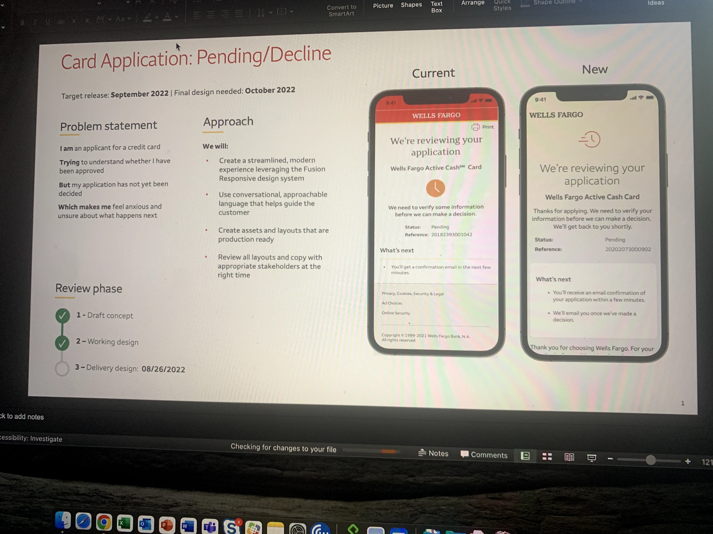
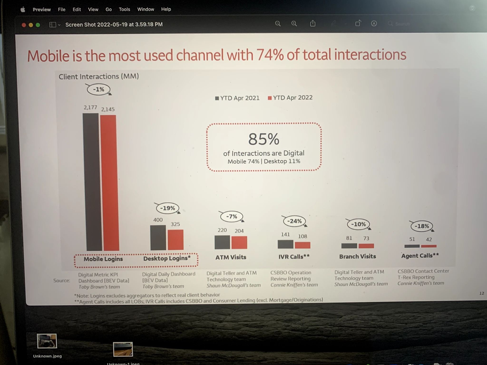
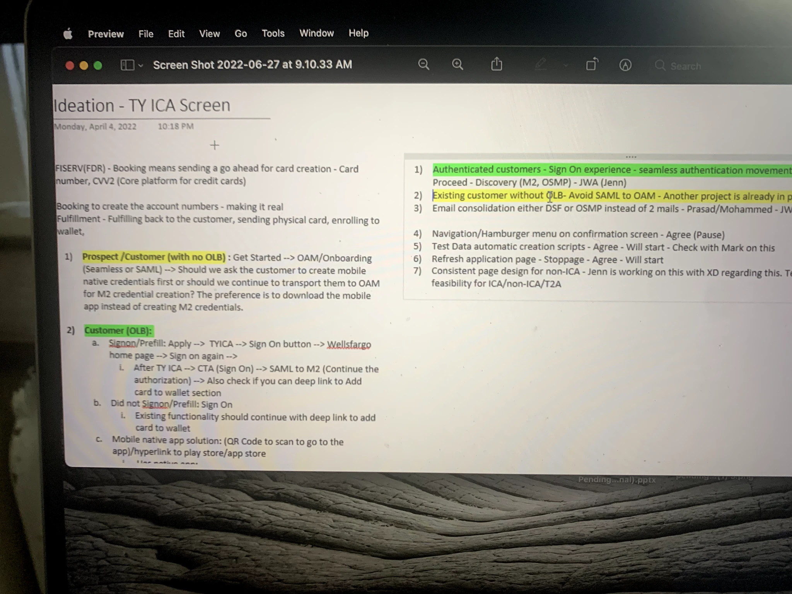
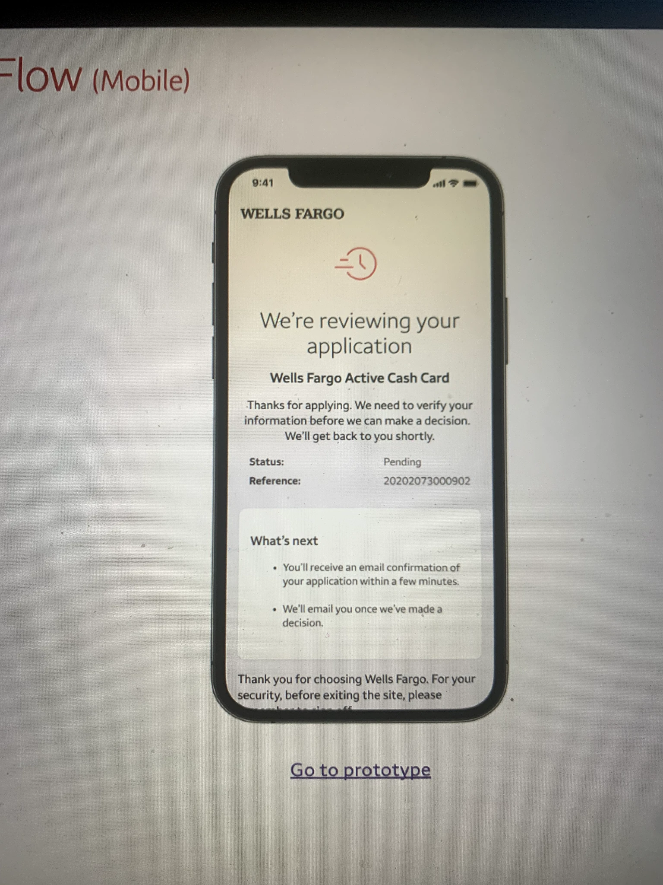
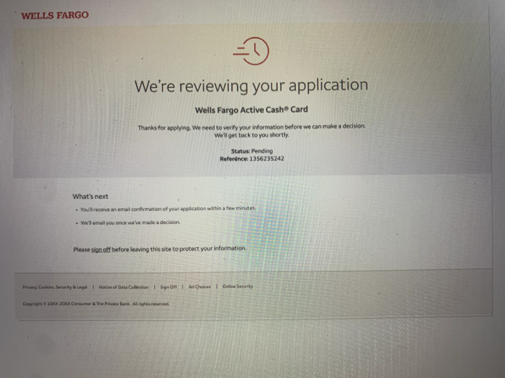
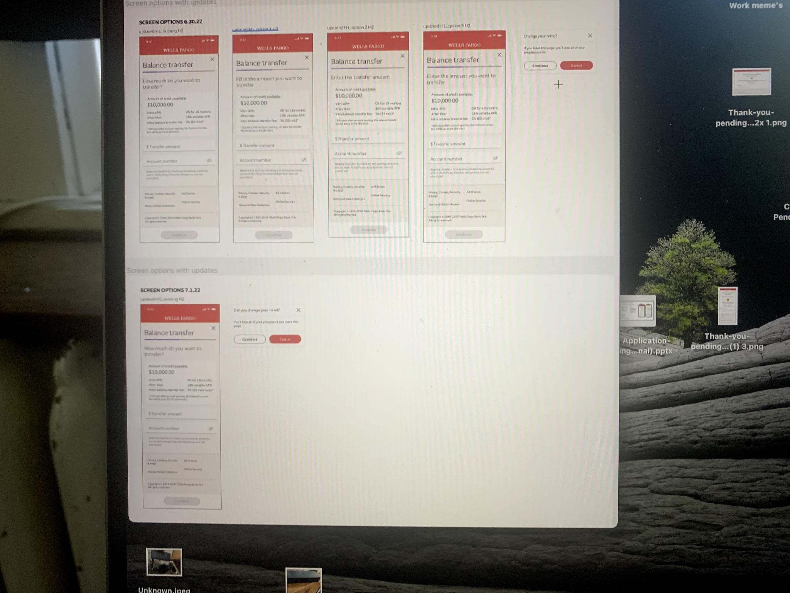
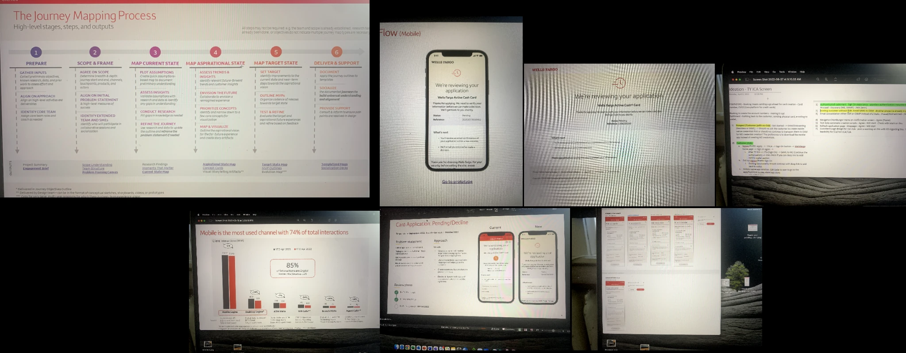

Overview
The moment after a credit card application is submitted is still part of the customer journey. For the Wells Fargo Active Cash Card, I worked on the pending and decline application-status experience, related balance-transfer screens, and the thank-you experience across mobile and desktop. The design goal was to make the status, reason for waiting, and next steps easy to understand.
My role & collaboration
As a Product Designer, I worked hands-on with a content strategist to keep the interface and messaging within Wells Fargo’s brand. The work brought together layout, information hierarchy, conversational copy, and responsive behavior. Designs were reviewed with stakeholders as they moved from draft concept to working design and delivery preparation.
The reference deck lists a September 2022 target release, an October 2022 final-design need, and an August 26, 2022 delivery-design review milestone. These are dates documented in the project materials; they do not establish the actual launch date.
The problem: an uncertain decision
The project’s problem statement describes an applicant trying to understand whether they have been approved while their application has not yet been decided. That uncertainty can make the applicant anxious about what happens next. A pending screen needed to explain the situation without suggesting either approval or rejection.
The proposed approach was to use the Fusion Responsive design system, approachable language, production-ready assets and layouts, and reviews of both copy and design with the appropriate stakeholders.

Channel data & mobile priority
The supplied channel analysis compares year-to-date April 2021 and April 2022 client interactions, reported in millions. Its headline identifies mobile as 74% of total interactions and digital channels as 85%, comprising mobile at 74% and desktop at 11%. This context made the mobile experience central while keeping desktop in scope.
| Channel | YTD Apr 2021 | YTD Apr 2022 | Reported change |
|---|---|---|---|
| Mobile logins | 2,177 | 2,145 | −1% |
| Desktop logins | 400 | 325 | −19% |
| ATM visits | 220 | 204 | −7% |
| IVR calls | 141 | 108 | −24% |
| Branch visits | 81 | 73 | −10% |
| Agent calls | 51 | 42 | −18% |
These figures describe historical channel usage, not the impact of this redesign. The source notes that login counts exclude aggregators, agent calls include all lines of business, and IVR calls cover CSBBO and Consumer Lending excluding Mortgage/Originations.

Journey mapping & discovery
The supplied journey-mapping framework organizes work into six stages: Prepare; Scope & Frame; Map Current State; Map Aspirational State; Map Target State; Deliver & Support. It connects research and scope definition to an aspirational experience, a target-state plan, and implementation support.
- Prepare. Gather inputs, align the approach, and identify the core team.
- Scope & Frame. Agree on the journey scope, frame the initial problem, and identify extended participants.
- Map Current State. Plot assumptions, assess insights, conduct research, and refine the journey.
- Map Aspirational State. Assess trends, envision the future, prioritize concepts, and visualize the experience.
- Map Target State. Set the target, outline minimum viable changes, and test and refine.
- Deliver & Support. Document, socialize, and provide support for implementation.
The thank-you-screen ideation notes also distinguish new applicants without online banking from existing customers. They explore the handoff into sign-on, onboarding, the mobile app, and adding a card to a wallet. Those notes show journey considerations and open questions rather than proof that every idea was implemented.

Mobile application-status design
The before-and-after reference shifts attention from a dense page with a prominent red header and extended footer to a calmer hierarchy. The revised design identifies the Active Cash Card, explains that information needs verification, and groups Pending status with a reference number. A separate “What’s next” panel describes the confirmation email and the later decision email.
The content strategist and I treated these messages as part of the interaction design. The reason for waiting, the timing of communication, and the reassuring sign-off needed to work together with the layout.


The clean iPhone presentation above is a portfolio refresh of the historical screen. The original reference image remains available for comparison.
Desktop continuity
The desktop reference carries the same status message and card identification into a wider layout. Status and reference details sit with the review explanation, followed by a dedicated next-step area. A sign-off reminder reinforces how to leave the site securely.
The goal across devices was continuity: the applicant should encounter the same explanation and expectations whether they used a phone or desktop.

Balance-transfer iterations
The supplied design board records screen options dated June 30 and July 1, 2022. It compares several ways to ask for the transfer amount, including a question, an instruction to fill in an amount, and a direct “Enter the transfer amount” heading. The screens retain credit information, transfer amount and account fields, and a continuation control.
The board also explores a “Change your mind?” / “Did you change your mind?” exit confirmation. Its purpose is to explain that leaving would lose progress before the applicant proceeds or cancels. The reference demonstrates copy and layout iterations; it does not provide a usability-test sample or measured conversion result.

Reference overview
This overview brings together the supplied journey-mapping process and the historical screen references. The individual images above preserve the details at a larger size.

Outcome & reflection
The materials show a proposed, coordinated application-status direction across mobile and desktop, a current-versus-new comparison, and related balance-transfer and thank-you explorations. They support the design rationale and documented iterations, but do not provide post-launch approval, conversion, satisfaction, or support-contact metrics.
My central takeaway is that the waiting state deserves the same care as the application form. A clear status, a reason for the wait, and a concrete next step help applicants understand the experience while keeping the language aligned with the brand.